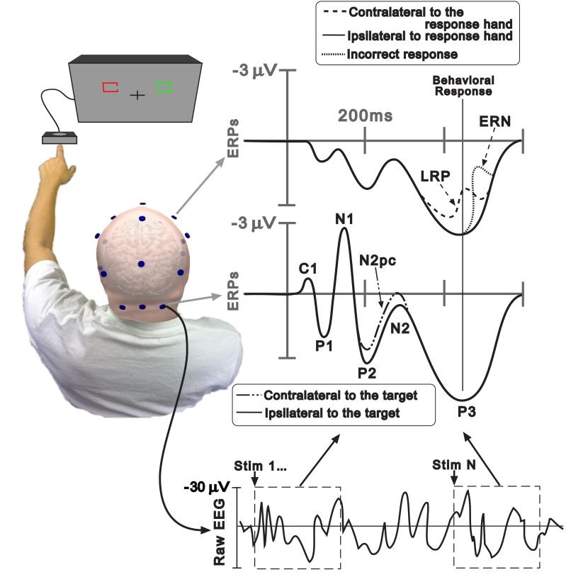

ANÁLISE DOS POTENCIAIS RELACIONADOS A EVENTOS (ERP)
Comparativo de Faixas Etárias e Inserção de Dados Individuais 📊 Ψ–Z
Desenvolvedor: Iraê César Brandão - Desenvolvido em: 06/05/2026 - Atualizado em: 19/02/2026
Notas Explicativas: Este gráfico representa variações dos Potenciais Relacionados a Eventos (ERP),
com foco em duas métricas principais: Latência (ms) e Amplitude (μV).
Insira os dados de uma pessoa analisada abaixo para posicioná-la no gráfico.
O que significa Event-Related Potentials (ERP) ?
(tradução em portugues: - Potenciais Relacionados a Eventos - são flutuações de voltagem,
medidas no couro cabeludo, que estão sincronizadas com um evento específico. Esses eventos
podem ser estímulos sensoriais, atividades cognitivas ou até mesmo respostas motoras. Os ERPs são,
na realidade, uma medida da atividade cerebral, captada através da eletroencefalografia (EEG), que
é analisada para identificar padrões de resposta a determinados estímulos (WOODMAN, 2010).

Fonte: Woodman( 2010).
Fig 1: Série de Flutuações de Voltagem
Potenciais Relacionados a Eventos (ERP)
Essa técnica é uma forma especializada de analisar o Eletroencefalograma (EEG).
Enquanto o EEG mostra a atividade cerebral contínua, o ERP isola a resposta do
cérebro a um estímulo sensorial (ex: um som), cognitivo (ex: leitura de uma palavra)
ou motor (ex: apertar um botão).
| Categoria |
Descrição |
| Sincronização com o Evento |
O ERP mede o que acontece no cérebro milissegundos após um estímulo. |
| Média de Sinais |
Como a resposta a um único estímulo é pequena e misturada com o ruído cerebral,
o estímulo é repetido diversas vezes e os sinais são promediados para gerar
uma onda ERP clara.
|
| Componentes (Picos) |
O ERP é visualizado como um gráfico com picos positivos (P) e negativos (N).
O número (ex: P300) indica o tempo aproximado, em milissegundos, em que ocorre.
|
| Alta Resolução Temporal |
Permite identificar quando o cérebro processa informações com precisão de milissegundos.
|
| N170 |
Relacionado ao processamento visual de faces. |
| P300 |
Associado à atenção, memória e detecção de estímulos relevantes ou inesperados. |
| N400 |
Associado ao processamento de linguagem e significado semântico,
especialmente quando há incongruência contextual.
|
| Neurociência Cognitiva |
Estudo de percepção, atenção, memória e linguagem.
|
| Diagnóstico Clínico |
Investigação de distúrbios neurológicos e psiquiátricos,
identificando anomalias no funcionamento cerebral.
|
| Interfaces Cérebro-Máquina (BCI) |
Permitem controlar dispositivos através de intenções motoras ou cognitivas.
|
Formas de Obtenção e Cálculo dos Valores de ERP
1. Métodos de Aquisição e Processamento (Técnico)
-
Eletroencefalografia (EEG):
Registro da atividade cerebral através de eletrodos posicionados no couro cabeludo,
medindo variações elétricas em milissegundos.
-
Média de Ensaios (Averaging):
O mesmo estímulo é apresentado dezenas ou centenas de vezes (mínimo típico de 20–30).
As respostas sincronizadas são calculadas em média para gerar ondas ERP mais claras.
-
Sincronização de Tempo (Time-locking):
O sinal de EEG é marcado exatamente no momento do estímulo ou resposta,
garantindo precisão temporal.
-
Limpeza de Sinais e Artefatos:
Remoção de ruídos como piscadas e movimentos musculares antes da média final.
2. Análise dos Valores (Métricas)
-
Amplitude (Voltagem):
Mede a intensidade do componente em microvolts (µV),
indicada pela altura da onda em relação à linha de base.
-
Latência (Tempo):
Mede o tempo entre o estímulo e o pico da onda,
geralmente em milissegundos (ms).
-
Mapas de Escala (Scalp Maps):
Representam visualmente como a amplitude do ERP se distribui pela superfície da cabeça.
3. Principais Formas de Onda
- P50: Componente precoce do processamento sensorial.
- N100 (N1): Primeira resposta negativa após o estímulo.
-
P300 (P3):
Relacionado à atenção e memória, com pico geralmente entre 300–500 ms.
4. Software e Hardware Utilizados
-
Softwares:
EmotivPRO Analyzer, Neuroscan, BrainVision, EEGLAB (MATLAB),
PsychoPy (para apresentação de estímulos).
-
Hardware:
Capacetes de EEG (ex: Emotiv EPOC) e amplificadores de sinal.
Cálculo e Interpretação do ERP (Latência e Amplitude)
A) Valores coletados
Você tem os seguintes dados do participante:
Latência medida: Lp (ms)
Amplitude medida: Ap (μV)
E você tem o banco normativo para a mesma faixa etária:
Latência média: L̄
Desvio padrão da latência: SDL
Amplitude média: Ā
Desvio padrão da amplitude: SDA
B) Fórmula do Z-score
Latência:
ZLat = (Lp - L̄) / SDL
Amplitude:
ZAmp = (Ap - Ā) / SDA
C) Passo a passo aritmético
- Obter a média (L̄ / Ā) e o desvio padrão (SDL / SDA) da faixa etária do banco normativo.
- Subtrair a média do valor medido pelo participante.
- Dividir a diferença pelo desvio padrão correspondente.
- Interpretar o Z-score:
- |Z| ≤ 1 → Dentro do esperado
- 1 < |Z| ≤ 2 → Variação moderada
- |Z| > 2 → Alteração significativa
- Plotar os valores no gráfico de Latência e Amplitude do participante.
D) Exemplo numérico
Latência medida: 290 ms
Média normativa: 270 ms
Desvio padrão: 15 ms
ZLat = (290 - 270) / 15 = 1,33 → Variação moderada
Amplitude medida: 11 μV
Média normativa: 13 μV
Desvio padrão: 2 μV
ZAmp = (11 - 13) / 2 = -1 → Dentro do esperado
Referência científica
Luck, S. J. (2014). Introduction to the Event-Related Potential Technique (2nd ed.). MIT Press.
- Explica conceitos de latência, amplitude e uso de Z-scores para interpretação de ERP.
Quais especialidades profissionais fazem uso da análise de ERP?
| Profissional / Área |
Objetivo / Aplicação |
|
Neurocientistas Cognitivos e Pesquisadores
|
Mapear o cronograma preciso de processos mentais como atenção, memória,
processamento de linguagem (ex: N400) e reconhecimento de faces (ex: N170).
|
|
Psicólogos e Psiquiatras
|
Identificar biomarcadores de transtornos mentais como TDAH
(alterações na latência do P300), ansiedade (ERN) e depressão.
|
|
Neurologistas e Clínicos
|
Investigar distúrbios neurológicos, epilepsia e avaliar funcionalmente
pacientes com dificuldade de resposta verbal através do monitoramento por EEG.
|
|
Pesquisadores de Tomada de Decisão
|
Estudar o processamento cerebral relacionado a risco,
avaliação de feedback e escolha comportamental.
|
Referências Bibliográficas:
HANDY, Todd C. (2005). Event-Related Potentials : A Methods Handbook. Cambridge: MIT Press.
KUTAS, Marta; FEDERMEIER, Kara D. (2011).
Thirty years and counting: Finding meaning in the N400 component of the event-related brain potential (ERP).
Annual Review of Psychology, 62, 621–647.
DOI: https://doi.org/10.1146/annurev.psych.093008.131123
LUCK, Steven J. (2014).An Introduction to the Event-Related Potential Technique . 2. ed. Cambridge: MIT Press.
POLICH, John (2007). Updating P300: An integrative theory of P3a and P3b.
Clinical Neurophysiology, 118(10), 2128–2148.
DOI: https://doi.org/10.1016/j.clinph.2007.04.019
WOODMAN, Geoffrey F. (2010). A brief introduction to the use of event-related
potentials in studies of perception and attention . [online]
Attention, perception & psychophysics. USA: National Library of Medicine , 72 (8). pp. 2031–2046.
DOI: 10.3758/APP.72.8.2031. PMID: 21097848; PMCID: PMC3816929.